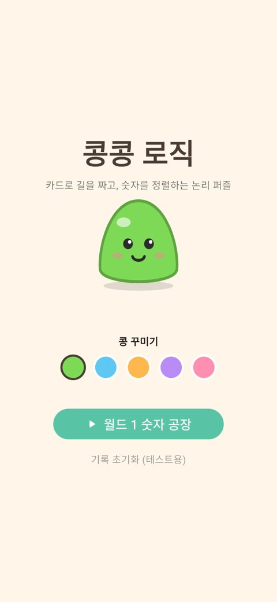
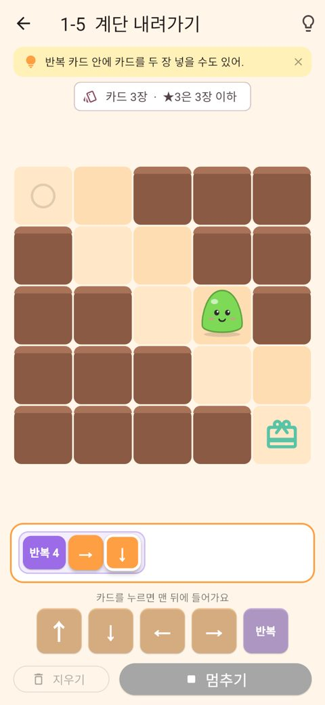

카드로 길을 짜고,
숫자를 줄 세워요
새싹 친구 콩콩에게 화살표, 반복, 조건 카드를 건네 사탕 상자까지 데려다주세요. 숫자 블록을 바꿔 라이벌 말랑이보다 먼저 정렬해 보세요. 초등 1학년부터 고등 3학년까지, 수학 교육과정을 따라 10개의 월드가 이어져요.
🃏 명령 카드 퍼즐🔢 정렬 레이스🍬 숫자 사탕 더하기🗺️ 10개 월드⭐ 카드가 적을수록 별🎨 콩콩 날개 꾸미기🎁 모든 기능 무료🙅 광고 없음📴 오프라인




이렇게 놀아요
- 판마다 콩콩이 가야 할 사탕 상자가 있어요. 벽과 숫자 사탕의 위치를 먼저 살펴봐요.
- 아래 카드를 눌러 명령을 순서대로 놓아요. 같은 움직임이 되풀이되면 반복 카드에 넣어요.
- 실행을 누르면 콩콩이 카드대로 움직여요. 벽에 부딪히거나 사탕 합이 틀리면 다시 고쳐 봐요.
- 도착하면 사용한 카드 수로 별을 받아요. 더 적은 카드로 다시 도전해 별 세 개를 모아요.
놀다 보면 생각이 자라요
🃏 순서대로 생각하기
화살표 카드로 시작해 반복 카드, "막힐 때까지" 조건 카드까지. 코딩의 기본 생각법을 퍼즐로 익혀요.
🔢 정렬 레이스
정해진 교환 횟수 안에 블록을 작은 수부터 줄 세워요. 옆끼리만 바꾸는 판, 아무 둘이나 바꾸는 판마다 다른 전략이 필요해요.
🗺️ 교육과정을 따라가는 월드
숫자 공장, 곱셈 농장, 분수 베이커리부터 함수 연구소, 미적분 썰매 언덕까지. 배우는 순서대로 퍼즐 속 수학이 자라요.
🎨 나만의 콩콩
콩콩은 모찌 노키의 새싹 친구예요. 날개 색을 골라 마음대로 꾸며요.
계정도 광고도 결제도 없어요
회원 가입, 운영자의 서버, 광고, 인앱 결제, 분석 도구가 모두 없어요. 별과 진행 기록, 꾸미기는 기기 안에만 저장되고 운영자에게 오지 않아요. 아이 혼자 해도 안심할 수 있게 만들었어요. 자세한 내용은 개인정보 처리방침을 봐 주세요.
곧 만나요
지금 첫 월드를 다듬고 있어요. App Store에 나오면 여기와 업데이트 소식에 알려 드릴게요.
- iPhone·iPad 먼저 출시하고, Android는 그다음에 준비해요.
- 10개 월드와 모든 기능이 처음부터 끝까지 무료예요. 무엇이 들어 있는지 보기
- 광고, 인앱 결제, 확률형 아이템이 없어요.
- 힌트만 하루 2번까지 쓸 수 있어요. 스스로 생각해 보는 시간을 지켜 주려고요.
오늘은 카드 몇 장으로
콩콩을 데려다줄 수 있을까요? 🍬